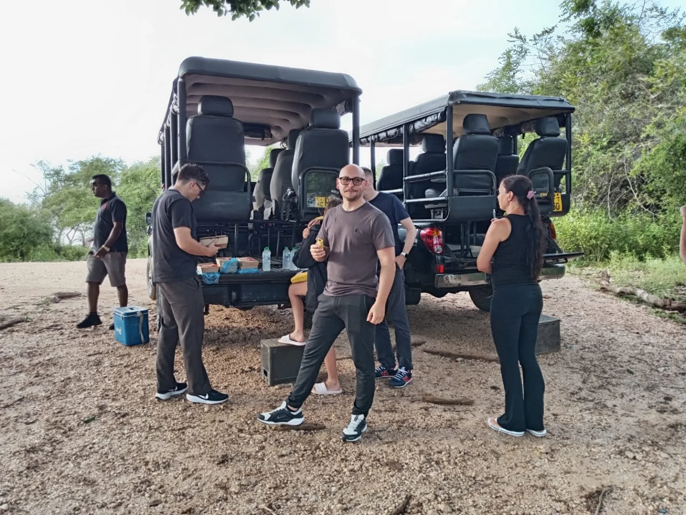
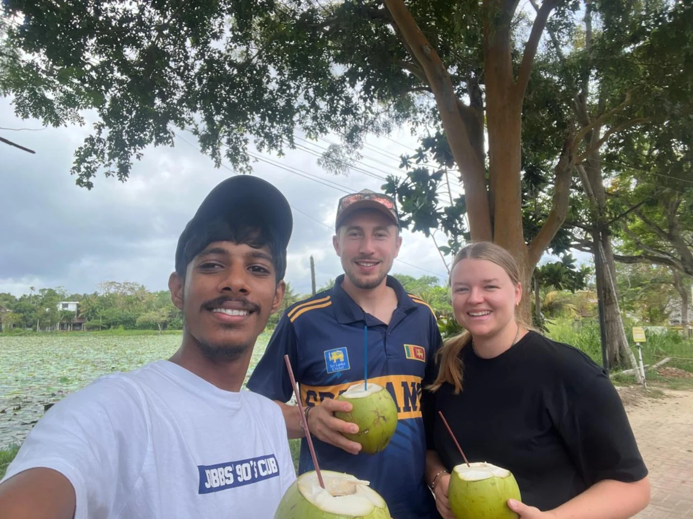
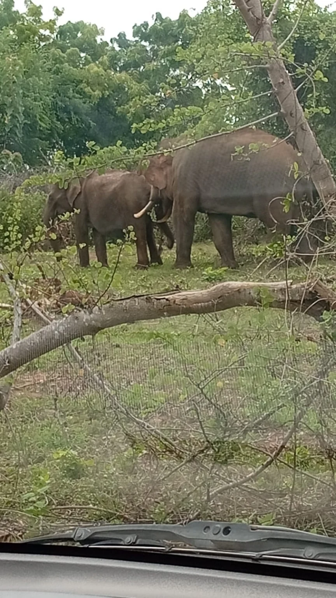
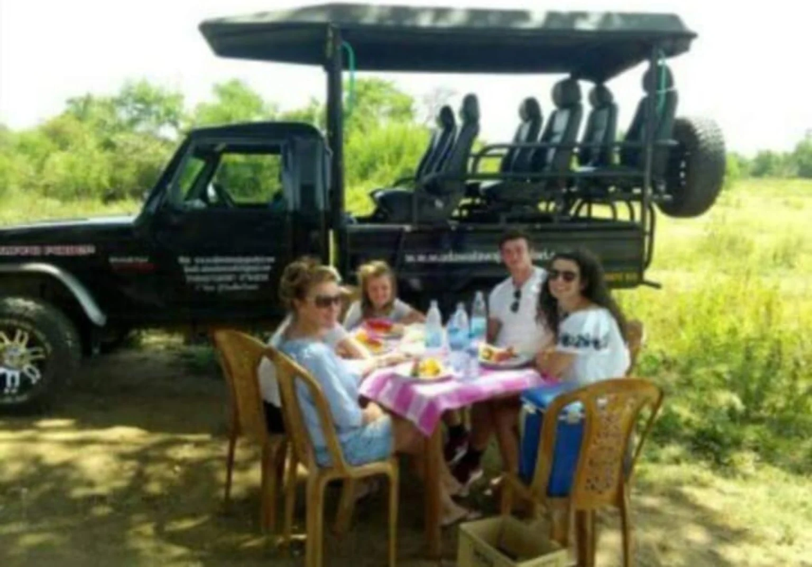
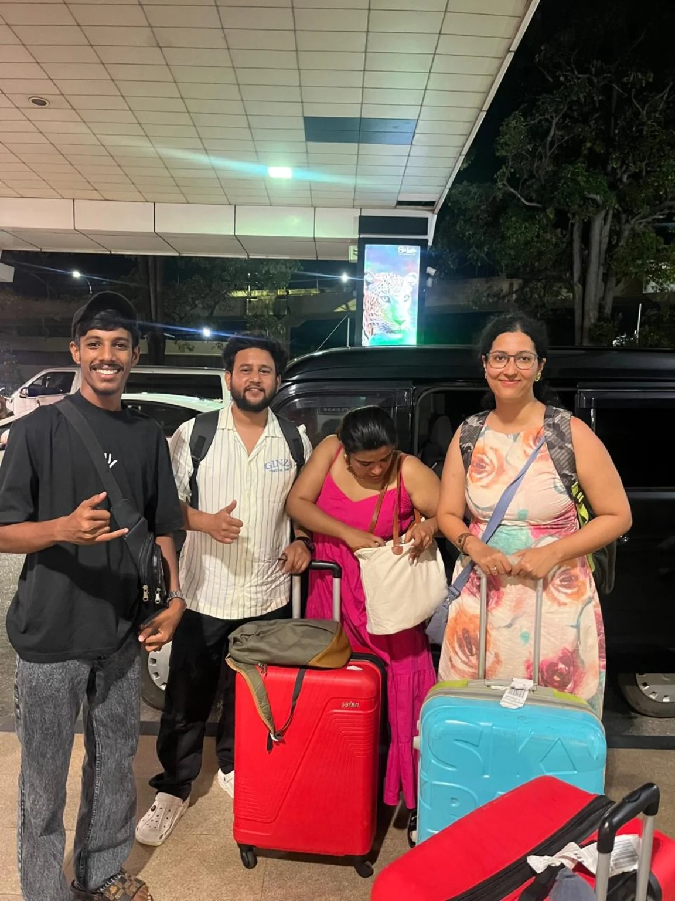

TANGALLE · SRI LANKA
A little wild.
A lot of Ceylon.
Open roads. Wild encounters. A warm island welcome. Discover Sri Lanka with Ceylon Safari Tours.
YOUR ISLAND ADVENTURE
BEGINS RIGHT HERE.
BEGINS RIGHT HERE.

GOOD COMPANY.GREAT ADVENTURES.
01 / THE SAFARI LIFEMade for the memories ↗
SAFARI DAYS✳ISLAND TRAVELS✳BIKE RENTALS✳LOCAL CONNECTIONS
ONE ISLAND. YOUR WAY.
Take the scenic route.
For the wildlife lovers, the curious wanderers,
and everyone who likes a little freedom.



AYUBOWAN!WELCOME TO OUR ISLAND
A LOCAL HELLO GOES A LONG WAY
Not just places.
People, too.
We’re Ceylon Safari Tours, a travel and bike rental business based in Tangalle. We bring together the journeys, the rides, and the friendly island welcome.
Tell us what a great day looks like to you. We’ll help arrange a way to experience it.
Get to know usA GLIMPSE OF THE GOOD TIMES
Real days. Real memories.




Moments from our journeys, shared through our own photos.
COME FOR THE ISLAND. STAY FOR THE MEMORIES.
Your next story starts in Tangalle.
A safari, an island journey, or a bike and an open road. Tell us what you have in mind.
Let’s plan it together